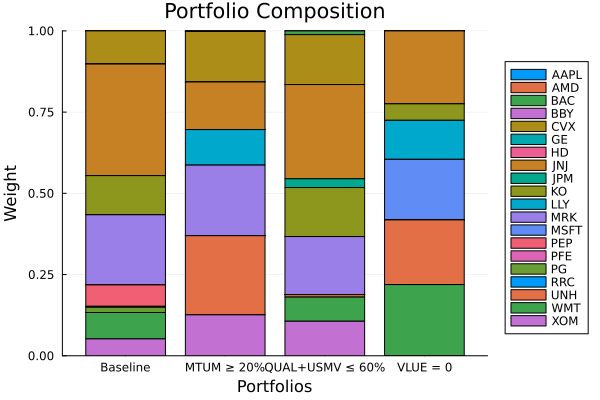

The source files can be found in examples/.
Factor exposure constraints
An investment mandate often limits factors instead of assets, for example "at most 10% momentum", "no net exposure to value" or "no more than 60% in the defensive factors together". Those are constraints on the factor exposures of the portfolio,
\[\boldsymbol{w}_f = \mathbf{M}^\intercal \boldsymbol{w}\]
where M is the loadings matrix that a factor model computes. To write such a constraint by hand, you fit the regression yourself, multiply it out, and paste twenty coefficients into an equation string. When the model fits the loadings again, that string uses loadings that the model no longer has.
ExposureConstraintEstimator writes that equation for you. It wraps what the lcse keyword accepts. Its space field, an AbstractConstraintSpace, states which names the rows use and how the library maps them onto the asset weights. The factor axis is the ordered list of factor names in the returns data, and section 2 declares it. With FactorSpace, the library looks up the names of each row on the factor axis and maps the row through the loadings of the prior. We call that mapping the projection. It happens when the library generates the constraint, and the optimiser gets an ordinary LinearConstraint on the asset weights. Every optimiser built on JuMPOptimiser accepts it and needs no knowledge of factors.
Use it when the mandate names a factor rather than an asset. It matters most under cross-validation or a walk-forward backtest, where each fold fits the loadings again. A row that you compute once by hand goes out of date. Section 7 measures how far a hand-written row drifts on this dataset.
using PortfolioOptimisers, CSV, TimeSeries, DataFrames, PrettyTables, Clarabel, StatsPlots, GraphRecipes, LinearAlgebraresfmt = (v, i, j) -> begin return if j == 1 v else isa(v, AbstractFloat) ? "$(round(v*100, digits=3)) %" : v endend;1. Returns and factor data
A factor exposure constraint needs two inputs that an asset mandate does not. It needs factor returns, so that the prior can fit a regression. It needs factor names, so that you can write the constraint. We pass the factor prices next to the asset prices, and prices_to_returns stores the factor names in the nf field of the ReturnsResult. The last line prints them.
X = TimeArray(CSV.File(joinpath(@__DIR__, "..", "SP500.csv.gz")); timestamp = :Date)[(end - 252):end]F = TimeArray(CSV.File(joinpath(@__DIR__, "..", "Factors.csv.gz")); timestamp = :Date)[(end - 252):end]rd = prices_to_returns(price_ingestion(PriceIngestion(), X; F = F))slv = Solver(; name = :clarabel, solver = Clarabel.Optimizer, settings = Dict("verbose" => false), check_sol = (; allow_local = true, allow_almost = true))rd.nf5-element Vector{String}:
"MTUM"
"QUAL"
"SIZE"
"USMV"
"VLUE"2. Declaring the factor axis
UniverseSets declares each axis under its own key. xkey names the asset axis, with the default "nx". tfkey names the axis of the time-series factors, with the default "nf". A cross-sectional factor model names its own axis under cfkey, and the library picks the key from the loadings, so you never state it. The asset axis is required. Both factor axes are optional, and a constraint that needs a missing axis fails when it looks for the axis, not when you build the sets.
A universe is an ordered list. The position of a name is the only link between the name and a column of the data. A universe with the right names in the wrong order attaches every constraint to the wrong column, and the problem still solves. So before it fits the prior, the library checks the asset axis against rd.nx and the time-series factor axis against rd.nf, name for name and in order. We declare both axes from the returns data.
sets = UniverseSets(; dict = Dict("nx" => rd.nx, "nf" => rd.nf))UniverseSets
xkey ┼ String: "nx"
uxkey ┼ String: "ux"
tfkey ┼ String: "nf"
utfkey ┼ String: "uf"
cfkey ┼ String: "ncf"
ucfkey ┼ String: "ucf"
nikey ┼ String: "ni"
dict ┴ Dict{String, Vector{String}}: Dict("nf" => ["MTUM", "QUAL", "SIZE", "USMV", "VLUE"], "nx" => ["AAPL", "AMD", "BAC", "BBY", "CVX", "GE", "HD", "JNJ", "JPM", "KO", "LLY", "MRK", "MSFT", "PEP", "PFE", "PG", "RRC", "UNH", "WMT", "XOM"])
3. The loadings on the prior
A factor exposure constraint needs a prior that fits a regression, because the projection uses the loadings of that regression. FactorPrior fits one, and EmpiricalPrior does not. The loadings are in the rr field of the prior result.
The constraint uses the loadings rr.M, not rr.L. A risk decomposition, such as FactorRiskContribution or FactorRiskBudgeting, uses L. Under a DimensionReductionRegression, L holds the loadings on the retained principal components, and one linear map relates L to M. The default regression of FactorPrior, which this page uses, is a StepwiseRegression. It does not set L, and rr.L then returns M. A constraint always uses M, because you write a constraint in names, and only the columns of M have factor names. We fit the prior and print the size of M, one row per asset and one column per factor.
pr = prior(FactorPrior(), rd)size(pr.rr.M)(20, 5)We solve the minimum-risk portfolio with no constraint and print its factor exposures, Mᵀw. They are the baseline that each mandate below changes.
opt_base = JuMPOptimiser(; pe = FactorPrior(), slv = slv, sets = sets)res_base = optimise(MeanRisk(; obj = MinimumRisk(), opt = opt_base), rd)exposures(res) = transpose(res.pa.pr.rr.M) * res.wpretty_table(DataFrame("Factor" => rd.nf, "Baseline" => exposures(res_base)); formatters = [resfmt], title = "Baseline factor exposures")Baseline factor exposures
┌────────┬───────────┐
│ Factor │ Baseline │
│ String │ Float64 │
├────────┼───────────┤
│ MTUM │ -6.758 % │
│ QUAL │ -10.798 % │
│ SIZE │ -61.873 % │
│ USMV │ 105.707 % │
│ VLUE │ 47.488 % │
└────────┴───────────┘The portfolio has a large long exposure to low volatility, USMV, and a large short exposure to size, SIZE. Both are usual for a minimum-risk portfolio. Its momentum exposure is slightly negative.
4. A momentum floor
To require at least 20% momentum, wrap an ordinary LinearConstraintEstimator and declare the space. The wrapped estimator supplies the "name op value" grammar, the expansion of groups and the strict keyword.
We pass the prior estimator, pe = FactorPrior(), and not a prior result, and we give rd to optimise. The library then projects the constraint through the loadings that the prior fits on the data it gets. Section 7 shows why that matters.
ece = ExposureConstraintEstimator(; lce = LinearConstraintEstimator(; val = "MTUM >= 0.2"), space = FactorSpace())res_mtum = optimise(MeanRisk(; obj = MinimumRisk(), opt = JuMPOptimiser(; pe = FactorPrior(), slv = slv, sets = sets, lcse = ece)), rd)pretty_table(DataFrame("Factor" => rd.nf, "Baseline" => exposures(res_base), "MTUM ≥ 20%" => exposures(res_mtum)); formatters = [resfmt], title = "Momentum floor") Momentum floor
┌────────┬───────────┬────────────┐
│ Factor │ Baseline │ MTUM ≥ 20% │
│ String │ Float64 │ Float64 │
├────────┼───────────┼────────────┤
│ MTUM │ -6.758 % │ 20.0 % │
│ QUAL │ -10.798 % │ -35.285 % │
│ SIZE │ -61.873 % │ -48.777 % │
│ USMV │ 105.707 % │ 96.28 % │
│ VLUE │ 47.488 % │ 49.392 % │
└────────┴───────────┴────────────┘Compare the momentum exposure with its floor of 20%. The optimiser receives one row on the asset weights, and the result stores it in pa.lcsr, as it stores any linear constraint. We print the coefficients of the row.
res_mtum.pa.lcsr.ineq.A1×20 transpose(::Matrix{Float64}) with eltype Float64:
-0.0 -0.37705 -0.25362 0.682357 -0.295887 -0.0 0.360435 0.145362 -0.0 0.214574 -0.271698 -0.0 -0.0 0.156436 -0.0 0.251217 -0.0 -0.38072 0.359849 -0.4151395. Factor groups need no extra code
A group of UniverseSets expands by name, and nothing checks which axis the names belong to. So a factor group is one more key in the same dictionary.
A factor constraint that names a group of assets does not raise an error by default. Each asset name is unknown on the factor axis, and the library drops the row with a warning. It throws an error only under strict = true.
We add a group "defensive" of QUAL and USMV, and cap its exposure at 60%.
sets_grp = UniverseSets(; dict = Dict("nx" => rd.nx, "nf" => rd.nf, "defensive" => ["QUAL", "USMV"]))res_grp = optimise(MeanRisk(; obj = MinimumRisk(), opt = JuMPOptimiser(; pe = FactorPrior(), slv = slv, sets = sets_grp, lcse = ExposureConstraintEstimator(; lce = LinearConstraintEstimator(; val = "defensive <= 0.6"), space = FactorSpace()))), rd)w_grp = exposures(res_grp)pretty_table(DataFrame("Factor" => rd.nf, "Baseline" => exposures(res_base), "QUAL + USMV ≤ 60%" => w_grp); formatters = [resfmt], title = "A factor group") A factor group
┌────────┬───────────┬───────────────────┐
│ Factor │ Baseline │ QUAL + USMV ≤ 60% │
│ String │ Float64 │ Float64 │
├────────┼───────────┼───────────────────┤
│ MTUM │ -6.758 % │ -0.571 % │
│ QUAL │ -10.798 % │ -19.853 % │
│ SIZE │ -61.873 % │ -45.383 % │
│ USMV │ 105.707 % │ 79.853 % │
│ VLUE │ 47.488 % │ 58.588 % │
└────────┴───────────┴───────────────────┘We add the exposures of QUAL and USMV, the second and fourth factors, to compare the sum with the cap.
sum(w_grp[[2, 4]])0.59999912830925826. No net exposure to a factor
You write an equality the same way. "VLUE == 0" is the mandate "no net exposure to value" from the introduction, in one string.
res_neutral = optimise(MeanRisk(; obj = MinimumRisk(), opt = JuMPOptimiser(; pe = FactorPrior(), slv = slv, sets = sets, lcse = ExposureConstraintEstimator(; lce = LinearConstraintEstimator(; val = "VLUE == 0"), space = FactorSpace()))), rd)pretty_table(DataFrame("Factor" => rd.nf, "Baseline" => exposures(res_base), "VLUE = 0" => exposures(res_neutral)); formatters = [resfmt], title = "Value-neutral") Value-neutral
┌────────┬───────────┬───────────┐
│ Factor │ Baseline │ VLUE = 0 │
│ String │ Float64 │ Float64 │
├────────┼───────────┼───────────┤
│ MTUM │ -6.758 % │ -1.392 % │
│ QUAL │ -10.798 % │ 16.562 % │
│ SIZE │ -61.873 % │ -39.5 % │
│ USMV │ 105.707 % │ 116.086 % │
│ VLUE │ 47.488 % │ 0.0 % │
└────────┴───────────┴───────────┘7. Why a hand-written row goes out of date
We split the sample in half, fit the loadings on the first half, and write the momentum cap by hand with them, as an equation of twenty terms on the asset weights. On the second half the prior fits new loadings. We solve on the second half with the hand-written row and with the projected cap, and print the momentum exposure of each portfolio, measured with the loadings of the second half.
rd_a = ReturnsResult(; nx = rd.nx, X = rd.X[1:126, :], nf = rd.nf, F = rd.F[1:126, :])rd_b = ReturnsResult(; nx = rd.nx, X = rd.X[127:end, :], nf = rd.nf, F = rd.F[127:end, :])pr_a = prior(FactorPrior(), rd_a)pr_b = prior(FactorPrior(), rd_b)# The hand-written row: the first half's momentum loadings, spelled out as an equation.stale_eqn = join(string.(pr_a.rr.M[:, 1]) .* " * " .* rd.nx, " + ") * " <= 0.1"stale = LinearConstraintEstimator(; val = [stale_eqn])live = ExposureConstraintEstimator(; lce = LinearConstraintEstimator(; val = "MTUM <= 0.1"), space = FactorSpace())res_stale = optimise(MeanRisk(; obj = MinimumRisk(), opt = JuMPOptimiser(; pe = FactorPrior(), slv = slv, sets = sets, lcse = stale)), rd_b)res_live = optimise(MeanRisk(; obj = MinimumRisk(), opt = JuMPOptimiser(; pe = FactorPrior(), slv = slv, sets = sets, lcse = live)), rd_b)pretty_table(DataFrame("Row written against" => ["First half's loadings (by hand)", "The prior's own loadings"], "Realised MTUM exposure" => [dot(pr_b.rr.M[:, 1], res_stale.w), dot(pr_b.rr.M[:, 1], res_live.w)], "Cap" => [0.1, 0.1]); formatters = [resfmt], title = "A 10% momentum cap on the second half") A 10% momentum cap on the second half
┌─────────────────────────────────┬────────────────────────┬─────────┐
│ Row written against │ Realised MTUM exposure │ Cap │
│ String │ Float64 │ Float64 │
├─────────────────────────────────┼────────────────────────┼─────────┤
│ First half's loadings (by hand) │ 38.181 % │ 10.0 % │
│ The prior's own loadings │ 10.0 % │ 10.0 % │
└─────────────────────────────────┴────────────────────────┴─────────┘Compare the momentum exposure under the projected cap with the cap. Under the hand-written row, the portfolio has about four times the momentum exposure that the mandate allows. No warning appears, because the weights satisfy the row that the optimiser got.
Every fold of a KFold, IndexWalkForward or DateWalkForward scheme fits the prior on different rows, as this section did. Pass the estimator, and the library projects the constraint inside each fold, with the prior of that fold.
The source of the loadings, FactorSpace(; re = ...)
Everything above takes the loadings from the prior, which is what FactorSpace() means. The space also has an re field that names the source of the loadings. It looks for loadings in the same order as FactorRiskContribution, FactorRiskBudgeting and factor_risk_contribution. A precomputed Regression comes first, then the loadings of the prior, then a new fit from the returns.
The third source lets you use a factor mandate on a prior with no loadings, such as an EmpiricalPrior. The space then fits the loadings itself from the factor returns in rd, in each fold and in each inner problem of a meta optimiser. We solve the momentum cap on the second half with an EmpiricalPrior and FactorSpace(; re = StepwiseRegression()), and check that the prior result has no regression.
re_fit = ExposureConstraintEstimator(; lce = LinearConstraintEstimator(; val = "MTUM <= 0.1"), space = FactorSpace(; re = StepwiseRegression()))res_fit = optimise(MeanRisk(; obj = MinimumRisk(), opt = JuMPOptimiser(; pe = EmpiricalPrior(), slv = slv, sets = sets, lcse = re_fit)), rd_b)# The prior carries no regression: the basis is the space's own refit.isnothing(res_fit.pa.pr.rr)trueWe fit the same regression on the second half, and print the momentum exposure of each portfolio against its own loadings, next to the portfolio of the factor prior.
rr_fit = regression(StepwiseRegression(), rd_b)pretty_table(DataFrame("Basis source" => ["`FactorPrior`'s own loadings", "`FactorSpace(; re = StepwiseRegression())`"], "Realised MTUM exposure" => [dot(pr_b.rr.M[:, 1], res_live.w), dot(rr_fit.M[:, 1], res_fit.w)], "Cap" => [0.1, 0.1]); formatters = [resfmt], title = "Reading the basis versus fitting it") Reading the basis versus fitting it
┌────────────────────────────────────────────┬────────────────────────┬─────────┐
│ Basis source │ Realised MTUM exposure │ Cap │
│ String │ Float64 │ Float64 │
├────────────────────────────────────────────┼────────────────────────┼─────────┤
│ `FactorPrior`'s own loadings │ 10.0 % │ 10.0 % │
│ `FactorSpace(; re = StepwiseRegression())` │ 10.0 % │ 10.0 % │
└────────────────────────────────────────────┴────────────────────────┴─────────┘A precomputed re keeps its loadings fixed, and it goes out of date as the hand-written row of section 7 did. The library accepts it without a warning. FactorSpace(; re = pr_a.rr) fixes the loadings to those of the first half, as the hand-written equation did. The row has the right shape for the universe, and no check can find that the loadings are out of date. Use a precomputed re when the loadings do not change. When they change, use re = <an estimator> or a TimeDependent schedule on lcse.
The outer solve of a NestedClustered rejects a precomputed re with an error. The outer problem replaces the assets with cluster names, so no subset of the fixed loadings can match it. An estimator works here, because it fits the loadings on the universe it gets.
8. Mixing factor-space and asset-space constraints
The lcse keyword accepts a vector, and the vector can mix a projected constraint with a plain one. A plain LinearConstraintEstimator is a constraint on the asset weights and needs no wrapper. The library has no AssetSpace type.
[ece, lce] promotes to Vector{AbstractConstraintEstimator}. That type is wider than the type that lcse accepts, so JuMPOptimiser rejects the vector. Write the element type: PortfolioOptimisers.EcE_LcE_Lc[ece, lce]. The same applies to a vector that mixes estimators and precomputed constraints.
We cap JNJ at 10% next to the momentum floor, and print the momentum exposure and the weight of JNJ.
mixed = PortfolioOptimisers.EcE_LcE_Lc[ece, LinearConstraintEstimator(; val = "JNJ <= 0.1")]res_mixed = optimise(MeanRisk(; obj = MinimumRisk(), opt = JuMPOptimiser(; pe = FactorPrior(), slv = slv, sets = sets, lcse = mixed)), rd)pretty_table(DataFrame("Constraint" => ["MTUM ≥ 20% (factor space)", "JNJ ≤ 10% (asset space)"], "Realised" => [exposures(res_mixed)[1], res_mixed.w[findfirst(==("JNJ"), rd.nx)]]); formatters = [resfmt], title = "Both hold at once") Both hold at once
┌───────────────────────────┬──────────┐
│ Constraint │ Realised │
│ String │ Float64 │
├───────────────────────────┼──────────┤
│ MTUM ≥ 20% (factor space) │ 20.0 % │
│ JNJ ≤ 10% (asset space) │ 10.0 % │
└───────────────────────────┴──────────┘9. Projecting a precomputed constraint
ExposureConstraintEstimator wraps anything that lcse accepts, and that includes an assembled LinearConstraint. This is the one case where the library changes a precomputed constraint. You wrote its rows in factors, and the library projects the whole coefficient matrix, A * transpose(M). The right-hand side stays the same, because a change of basis acts on the row and not on the bound.
The columns of A must be factors, not assets. A precomputed constraint has no names, and the library checks that A has one column per factor. We cap the first factor, MTUM, at 10% with a one-row constraint, solve on the second half, and print the momentum exposure.
plc = LinearConstraint(; ineq = PartialLinearConstraint(; A = transpose(reshape([1.0, 0, 0, 0, 0], 5, 1)), B = [0.1]))res_pre = optimise(MeanRisk(; obj = MinimumRisk(), opt = JuMPOptimiser(; pe = FactorPrior(), slv = slv, sets = sets, lcse = ExposureConstraintEstimator(; lce = plc, space = FactorSpace()))), rd_b)dot(pr_b.rr.M[:, 1], res_pre.w)0.099999002254664810. Failure modes
The library makes three of the four checks below when it generates the constraint, and the fourth before it fits the prior.
No regression on the prior
A missing regression always throws an error, whatever the value of strict. strict controls unknown names. An unknown name affects one row, and the library can drop that row and still solve the problem you described. A missing regression makes every row impossible to build. If the library dropped every row with no error, you would get a feasible portfolio with none of the exposure you asked for.
The regression is missing when neither the space nor the prior has one. The fix is a prior that computes loadings, or a space that gives them through FactorSpace(; re = ...), as above. The message names both fixes. We solve with an EmpiricalPrior and a FactorSpace() with no re.
try optimise(MeanRisk(; obj = MinimumRisk(), opt = JuMPOptimiser(; pe = EmpiricalPrior(), slv = slv, sets = sets, lcse = ece)), rd)catch err errendIsNothingError{String}("a factor exposure constraint is written in factor names and re-based through the regression loadings, so it needs a source for them, and none of the three carriers holds any: the space states none (`space.re === nothing`) and the prior carries none (`rr === nothing`). Unlike an unknown name, this is not recoverable per row and is not governed by `strict`: every row of the constraint would be dropped, leaving a feasible portfolio with none of the requested exposure.\nState the basis on the space instead, `FactorSpace(; re = Regression(; M = ...))` to pin it or `FactorSpace(; re = StepwiseRegression())` to refit it from the returns. No regression was ever computed: wrapping estimators forward `rr` and the factor block `fpr` from the prior they wrap, so nesting order does not matter, but nothing in the chain produces loadings (e.g. `EntropyPoolingPrior(; pe = EmpiricalPrior())`). Put an estimator that produces them at the bottom, such as `FactorPrior`.")An unknown factor name
By default the library drops the row with a warning, and under strict = true it throws an error. The error names the axis that the library searched. With it, you can tell a factor name written on the asset axis from an asset name written on the factor axis. We ask for a factor F3 that a small universe of three assets and two factors does not have.
sets_small = UniverseSets(; dict = Dict("nx" => ["A", "B", "C"], "nf" => ["F1", "F2"]))rr_small = Regression(; M = [1.0 0.0; 0.5 0.0; 0.0 0.0])try linear_constraints(ExposureConstraintEstimator(; lce = LinearConstraintEstimator(; val = "F3 <= 0.3"), space = FactorSpace()), sets_small; rr = rr_small, strict = true)catch err errendArgumentError("variable `F3` not in factor universe (2 factors under key `nf`); row dropped")A row that the loadings turn into zeros
Every name can resolve, and the projection can still give a row of zeros. That happens when no asset loads on the named factors, or when the loadings of a long-short combination cancel. A row of zeros looks the same as a row where no name matched, so the library reports the two cases with different messages. Here the fix is to check the loadings, not the spelling.
F2 in the small universe above is a factor that no asset loads on.
try linear_constraints(ExposureConstraintEstimator(; lce = LinearConstraintEstimator(; val = "F2 <= 0.3"), space = FactorSpace()), sets_small; rr = rr_small, strict = true)catch err errendArgumentError("constraint `F2 <= 0.3` resolved against the factor universe (2 factors under key `nf`) but projected to an all-zero row over 3 assets: every matched factor has zero loadings; row dropped")A universe that does not match the data
This is the order check of section 2, applied to the factor axis. It runs before the library fits the prior, and only when both sides exist. rd.nf is optional on a ReturnsResult, and the factor axis is optional on a UniverseSets, so the library skips the check for a plain asset mandate. We reverse the factor names in the universe.
try optimise(MeanRisk(; obj = MinimumRisk(), opt = JuMPOptimiser(; pe = FactorPrior(), slv = slv, sets = UniverseSets(; dict = Dict("nx" => rd.nx, "nf" => reverse(rd.nf))), lcse = ece)), rd)catch err errendArgumentError("the factor universe declared under key `nf` does not describe the returns data: both have 5 factors but the order differs, first at position 1: `VLUE` vs `MTUM`. Position is the only link between a name and a column, so this attaches constraints, bounds and groups to the wrong factor rather than failing. Set `sets.dict[\"nf\"]` to `rd.nf`, or slice the sets to match the data.")11. Constraints with no factor form, and why
ExposureConstraintEstimator wraps lcse and nothing else. You cannot pass it to gcarde or sgcarde, because the types of those keywords accept a LinearConstraintEstimator or a LinearConstraint and nothing that declares a space. lt, st and wb do not accept a linear constraint estimator.
The projection handles only a constraint that is a set of rows linear in the weights. Under the map w_f = Mᵀw, a factor row a becomes the asset row M a, and nothing else in the problem changes. The projection cannot change a constraint that adds its own variables to the model, even when the factor quantity has a clear definition.
- A cardinality constraint, such as
IntegerPhylogenyEstimator,gcardeorsgcarde, and a threshold constraint,ThresholdEstimator, act on the binary variables that show whether you hold an asset, not onw. A projected row is neither integer nor an index into those variables. "At most 5 factors held" is a different feature, with binary variables of its own. - Weight bounds,
WeightBoundsEstimator, are a box on each asset. A box on the factors,lb ≤ Mᵀw ≤ ub, is a linear constraint. Write it as two rows throughlcse. - Turnover,
Turnover, and tracking error,TrackingError, are norms. Each adds its own variables and cones, so it is not a row to rewrite. The factor turnover‖Mᵀ(w - w₀)‖is a real quantity, and it is not equal to any turnover of the asset weights. - Fees,
Fees, apply to each traded position. The proportional rates act on the long and short parts of the weights, and the fixed charges act on the binary variables of the mixed-integer model. The library subtracts the total from the return. You do not trade a factor, soMhas nothing to map.
To judge a new constraint, ask whether it is a row in w, the only thing that ExposureConstraintEstimator rewrites.
Tracking a factor already works
ReturnsTracking takes a series of benchmark returns, not a vector of benchmark weights, and the return series of a factor is a column of F. To track a factor, pass the column, which is already in the units of the factor.
TrackingError(; tr = ReturnsTracking(; w = view(rd.F, :, 1)), err = 0.05)12. Near-optimal centering and pipelines
Near-optimal centering
The default algorithm of NearOptimalCentering, UnconstrainedNearOptimalCentering, builds its centering model from the weight bounds, the budgets, the risk and the return. It drops the linear constraints, for asset mandates and for factor mandates. The portfolios that set the target of the centering still use them, but the reported weights under the default need not satisfy a factor mandate. Use ConstrainedNearOptimalCentering when the mandate must bind. We solve with it under the momentum floor and print the momentum exposure.
res_noc = optimise(NearOptimalCentering(; obj = MinimumRisk(), alg = ConstrainedNearOptimalCentering(), opt = JuMPOptimiser(; pe = FactorPrior(), slv = slv, sets = sets, lcse = ece)), rd)exposures(res_noc)[1]0.19999999830892767A pipeline step fixes its projection
An ExposureConstraintEstimator can also be a Pipeline step on its own. It takes the loadings from the prior slot, and it writes an ordinary LinearConstraint on the asset weights into constraints. The pipeline builds the factor axis from rd.nf. The axis therefore always exists and matches the order of the loadings.
The step fixes the rows to the prior of the pipeline. The projection happens once, when the step runs. A later optimiser that fits its own prior gets rows computed with the loadings that the step saw. Those rows are correct only if the optimiser uses the same prior. If you pass the estimator to the lcse field of the optimiser instead, as everywhere above, the library projects it with the prior in use. For a factor mandate, pass the estimator to lcse. A phylogeny constraint step makes a similar trade-off, because it fits its network once, on the returns of the pipeline.
13. Comparing the mandates
The data and the objective stay the same, and only the factor mandate changes. We print the factor exposures of the four portfolios and plot their weights.
results = [res_base, res_mtum, res_grp, res_neutral]labels = ["Baseline", "MTUM ≥ 20%", "QUAL+USMV ≤ 60%", "VLUE = 0"]pretty_table(DataFrame(["Factor" => rd.nf, [labels[i] => exposures(results[i]) for i in eachindex(results)]...]); formatters = [resfmt], title = "Factor exposures under each mandate")plot_stacked_bar_composition(results, rd; xticks = (1:length(labels), labels))
This page was generated using Literate.jl.